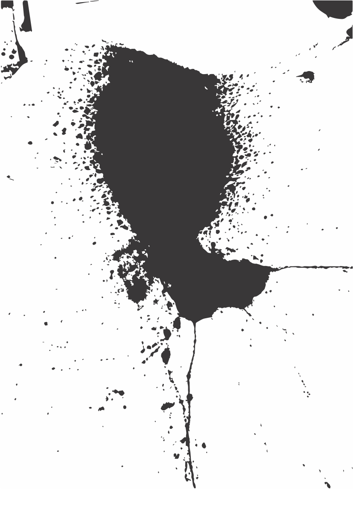
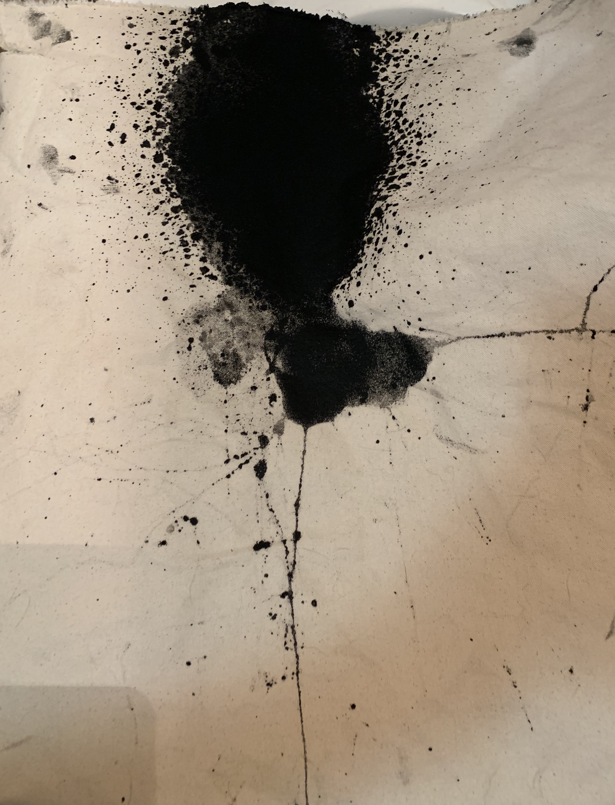

*There is something there. I remember Zekarias’ words as we talked on the phone. He was sitting on the platform of the MacArthur BART station, after the killing of Nia Wilson, there was something in the ether, a feeling, he recorded the sounds from the station. I call him today to talk to him about it, he doesn’t recall the conversation but we discuss the feeling. It wasn’t one particular emotion, there was an impetus to listen. “There is information here and I have to find it”.
* Auricular Shadows. The speaker is pointed upwards, canvas stretched across the front. There is a bowl of ink in the center. I press play on the field recording of the MacArthur BART station. The hum of cars, the resonant clatter of passing trains, the sound of air, murmuring voices. The ink bounces in rhythmic patterns, so quickly it begins to form shapes as it hangs in the air. I mesmerizing dance as it bounces upwards and plummets back down to the canvas. Spreading shadow like ink across the canvas, form takes shape, tributaries and channels flow forth. A permanent indelible mark has been derived from a transient moment. The stains are violent and humanlike, eerie feeling remains, I feel like they were coded within the sounds of a passing moment.
* Imperfect Silence. The concept of wabi-sabi finds value and beauty in imperfection, and in things bearing marks of age and individuality. One could say that ambience is “imperfect silence”, bearing the color of the things surrounding it, chaotic and dense. “Certain common sounds also suggest the sad-beautiful feeling of wabi-sabi. The mournful quarks and caws of seagulls and crows. The forlorn bellowing of foghorns. The wails of ambulance sirens echoing through canyons of big city buildings.” Ambience perhaps exudes beauty, it fills the space between us, tethers us together. It bears the stains of time and environmental stimuli. It contains information, and the patterns of life.
* Organized Noise. Attali speaks of music as the organization of noise, and music being a superstructure to “anticipate historical developments, to foreshadow new social formations in a prophetic and annunciators way”. Of course, he is speaking to the sounds compiled, composed, and organized by humans, but perhaps could also be the lamenting songs of whales, or the flourishes of bird song. And in terms of systems thought, the harmonious cacophony of bees in flight, the sway of a breeze through a field of flowers, the babble of a stream, and the gentle listless hum of the summer air are akin to a natural symphony, a composition of a place and time. Musicality is evident and ever-present in all environments.